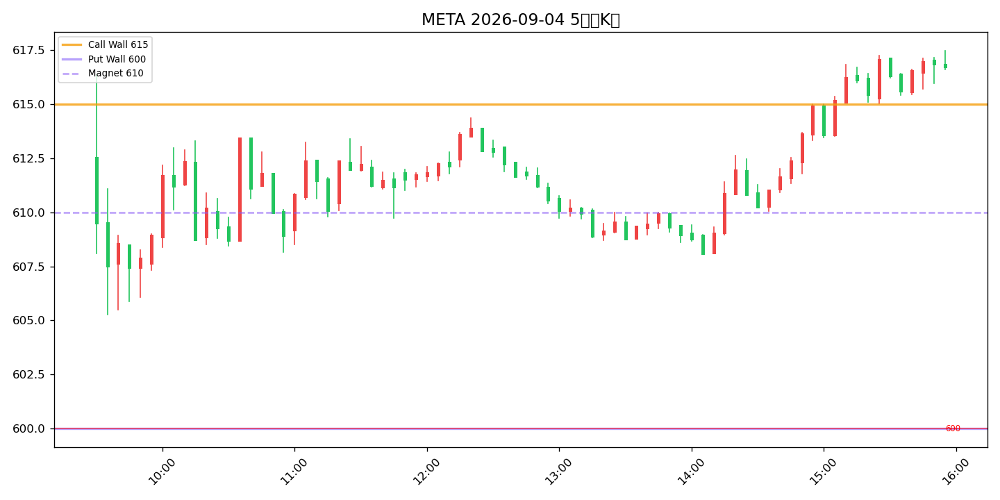

META
META 2026-09-04 周五
616.75 +0.69%
开 612.49 · 高 617.46 · 低 605.27
早盘分析
盘前预测·情况未发生｜发布时间 2026-09-04 07:24 MDT｜#junkman-analysis｜作者 junk_man
- 当前参考价 609.7368｜正 GEX
- 615 CALL WALL｜610 MAGNET｜600 PUT WALL｜596.5 FLIP
5 分钟 K 线
K 线：Yahoo Finance
夜航社 heatmap 历史仅保留最近3个交易日，本日无 heatmap 数据；YHS flow 历史从 2026-10-02 起，本日无 flow 数据。

分析总结
开盘612.49，最高617.46，最低605.27，收616.75（+0.69%）。日内振幅12.19点。